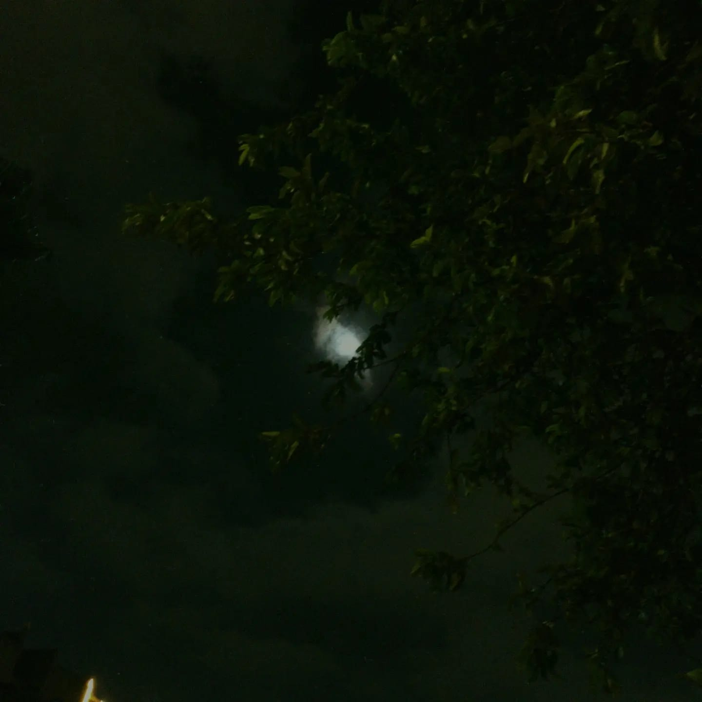
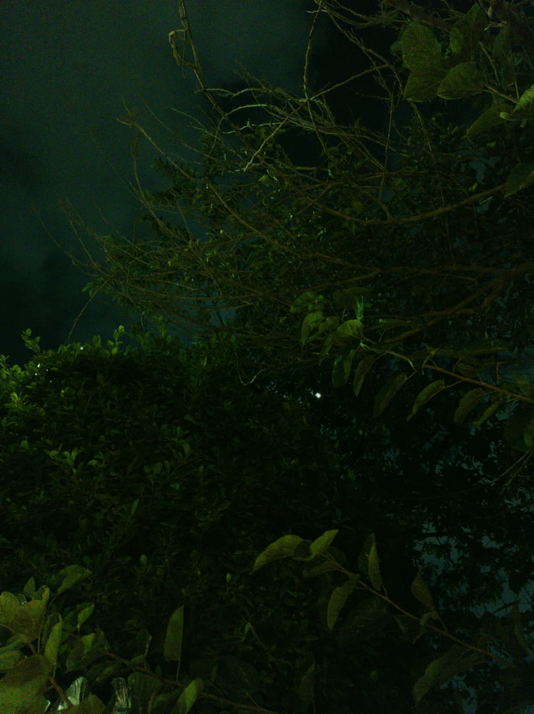
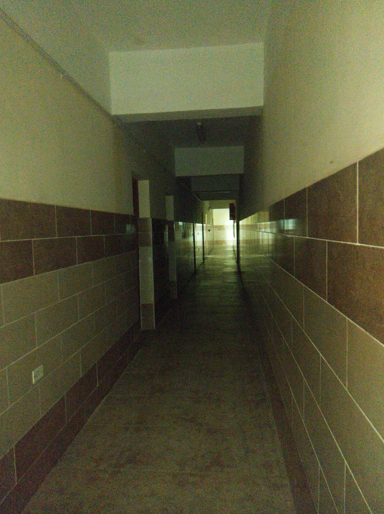
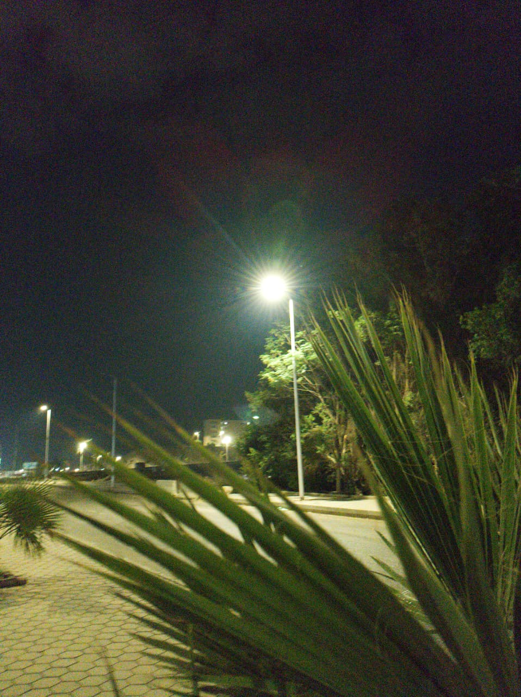

A random sky Image I took
Fun Fact! This is one of the first images I took with my new phone.
Hi, you already know my name! I am currently a G12 student at New Cairo STEM School. Even though I am G12, I am 16 years old, which is kinda dope ngl cuz I feel superior lol. A fun fact about me is that I am trying to be a Polymath. I am into multiple stuff. I am into Tech, Marketing, Psychology and Human Behaviour, Business, and honestly a lot of other random things that I find interesting. I really enjoy learning about things outside of what I am supposed to know, especially when I can connect different fields together and use them to create something. I don't really want to limit myself to one specific field or career. I want to explore as much as I can, build things, understand people, learn how businesses work, and develop skills that complement each other. I think the most interesting ideas usually happen when you combine knowledge from completely different areas. Outside of academics, I am also really into building projects and experimenting with ideas. I enjoy taking an idea that sounds stupid at first and trying to turn it into something real. I am especially interested in AI, entrepreneurship, and using technology to solve actual problems. Overall, I would say I am just extremely curious. I like going down random rabbit holes, learning things that have absolutely nothing to do with school, and then somehow finding a way to connect them back to something useful. My goal is basically to become the type of person who can walk into almost any conversation and have something interesting to contribute.

Fun Fact! This is one of the first images I took with my new phone.

I post these pics on @papisartisticgarden.

Nothing crazy I was just walking and took a pic 🤑

Was with a couple of my friends and just wanted to take a pic BOOM.